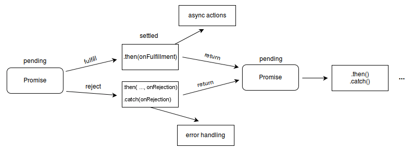

The Promise object represents the eventual completion (or failure) of an asynchronous operation and its resulting value.
{{AvailableInWorkers}}
To learn about the way promises work and how you can use them, we advise you to read Using promises first.
A Promise is a proxy for a value not necessarily known when the promise is created. It allows you to associate handlers with an asynchronous action's eventual success value or failure reason. This lets asynchronous methods return values like synchronous methods: instead of immediately returning the final value, the asynchronous method returns a promise to supply the value at some point in the future.
A Promise is in one of these states:
A pending promise can either be fulfilled with a value or rejected with a reason (error). When either of these options happens, the associated handlers queued up by a promise's then method are called. If the promise has already been fulfilled or rejected when a corresponding handler is attached, the handler will be called, so there is no race condition between an asynchronous operation completing and its handlers being attached.
As the {{JSxRef("Promise.then", "Promise.prototype.then()")}} and {{JSxRef("Promise.catch", "Promise.prototype.catch()")}} methods return promises, they can be chained.

Not to be confused with: Several other languages have mechanisms for lazy evaluation and deferring a computation, which they also call "promises", e.g. Scheme. Promises in JavaScript represent processes that are already happening, which can be chained with callback functions. If you are looking to lazily evaluate an expression, consider the arrow function with no arguments: f = () => expression to create the lazily-evaluated expression, and f() to evaluate.
Note: A promise is said to be settled if it is either fulfilled or rejected, but not pending. You will also hear the term resolved used with promises — this means that the promise is settled or “locked-in” to match the state of another promise. States and fates contain more details about promise terminology.
The methods promise.then(), promise.catch(), and promise.finally() are used to associate further action with a promise that becomes settled.
The .then() method takes up to two arguments; the first argument is a callback function for the resolved case of the promise, and the second argument is a callback function for the rejected case. Each .then() returns a newly generated promise object, which can optionally be used for chaining; for example:
const myPromise = new Promise((resolve, reject) => {
setTimeout(() => {
resolve('foo');
}, 300);
});
myPromise
.then(handleResolvedA, handleRejectedA)
.then(handleResolvedB, handleRejectedB)
.then(handleResolvedC, handleRejectedC);
Processing continues to the next link of the chain even when a .then() lacks a callback function that returns a Promise object. Therefore, a chain can safely omit every rejection callback function until the final .catch().
Handling a rejected promise in each .then() has consequences further down the promise chain. Sometimes there is no choice, because an error must be handled immediately. In such cases we must throw an error of some type to maintain error state down the chain. On the other hand, in the absence of an immediate need, it is simpler to leave out error handling until a final .catch() statement. A .catch() is really just a .then() without a slot for a callback function for the case when the promise is resolved.
myPromise .then(handleResolvedA) .then(handleResolvedB) .then(handleResolvedC) .catch(handleRejectedAny);
Using {{JSxRef("Functions/Arrow_functions", "Arrow Function Expressions")}} for the callback functions, an implementation of a promise chain might look something like this:
promise1
.then(value => { return value + ' and bar'; })
.then(value => { return value + ' and bar again'; })
.then(value => { return value + ' and again'; })
.then(value => { return value + ' and again'; })
.then(value => { console.log(value) })
.catch(err => { console.log(err) });
The termination condition of a promise determines the "settled" state of the next promise in the chain. A "resolved" state indicates a successful completion of the promise, while a "rejected" state indicates a lack of success. The return value of each resolved promise in the chain is passed along to the next .then(), while the reason for rejection is passed along to the next rejection-handler function in the chain.
The promises of a chain are nested like Russian dolls, but get popped like the top of a stack. The first promise in the chain is most deeply nested and is the first to pop.
(promise D, (promise C, (promise B, (promise A) ) ) )
When a nextValue is a promise, the effect is a dynamic replacement. The return causes a promise to be popped, but the nextValue promise is pushed into its place. For the nesting shown above, suppose the .then() associated with "promise B" returns a nextValue of "promise X". The resulting nesting would look like this:
(promise D, (promise C, (promise X) ) )
A promise can participate in more than one nesting. For the following code, the transition of promiseA into a "settled" state will cause both instances of .then() to be invoked.
const promiseA = new Promise(myExecutorFunc); const promiseB = promiseA.then(handleFulfilled1, handleRejected1); const promiseC = promiseA.then(handleFulfilled2, handleRejected2);
An action can be assigned to an already "settled" promise. In that case, the action (if appropriate) will be performed at the first asynchronous opportunity. Note that promises are guaranteed to be asynchronous. Therefore, an action for an already "settled" promise will occur only after the stack has cleared and a clock-tick has passed. The effect is much like that of setTimeout(action,10).
const promiseA = new Promise( (resolutionFunc,rejectionFunc) => {
resolutionFunc(777);
});
// At this point, "promiseA" is already settled.
promiseA.then( (val) => console.log("asynchronous logging has val:",val) );
console.log("immediate logging");
// produces output in this order:
// immediate logging
// asynchronous logging has val: 777
A settings object is an environment that provides additional information when JavaScript code is running. This includes the realm and module map, as well as HTML specific information such as the origin. The incumbent settings object is tracked in order to ensure that the browser knows which one to use for a given piece of user code.
To better picture this, we can take a closer look at how the realm might be an issue. A realm can be roughly thought of as the global object. What is unique about realms is that they hold all of the necessary information to run JavaScript code. This includes objects like Array and Error. Each settings object has its own "copy" of these and they are not shared. That can cause some unexpected behavior in relation to promises. In order to get around this, we track something called the incumbent settings object. This represents information specific to the context of the user code responsible for a certain function call.
To illustrate this a bit further we can take a look at how an <iframe> embedded in a document communicates with its host. Since all web APIs are aware of the incumbent settings object, the following will work in all browsers:
<!DOCTYPE html>
<iframe></iframe> <!-- we have a realm here -->
<script> // we have a realm here as well
const bound = frames[0].postMessage.bind(
frames[0], "some data", "*");
// bound is a built-in function -- there is no user
// code on the stack, so which realm do we use?
window.setTimeout(bound);
// this still works, because we use the youngest
// realm (the incumbent) on the stack
</script>
The same concept applies to promises. If we modify the above example a little bit, we get this:
<!DOCTYPE html>
<iframe></iframe> <!-- we have a realm here -->
<script> // we have a realm here as well
const bound = frames[0].postMessage.bind(
frames[0], "some data", "*");
// bound is a built in function -- there is no user
// code on the stack -- which realm do we use?
Promise.resolve(undefined).then(bound);
// this still works, because we use the youngest
// realm (the incumbent) on the stack
</script>
If we change this so that the <iframe> in the document is listening to post messages, we can observe the effect of the incumbent settings object:
<!-- y.html --> <!DOCTYPE html> <iframe src="x.html"></iframe> <script> const bound = frames[0].postMessage.bind(frames[0], "some data", "*"); Promise.resolve(undefined).then(bound); </script>
<!-- x.html -->
<!DOCTYPE html>
<script>
window.addEventListener("message", (event) => {
document.querySelector("#text").textContent = "hello";
// this code will only run in browsers that track the incumbent settings object
console.log(event);
}, false);
</script>
In the above example, the inner text of the <iframe> will be updated only if the incumbent settings object is tracked. This is because without tracking the incumbent, we may end up using the wrong environment to send the message.
Note: Currently, incumbent realm tracking is fully implemented in Firefox, and has partial implementations in Chrome and Safari.
Promise object. The constructor is primarily used to wrap functions that do not already support promises.Promise object that is rejected with the given reason.Promise object that is resolved with the given value. If the value is a thenable (i.e. has a then method), the returned promise will "follow" that thenable, adopting its eventual state; otherwise, the returned promise will be fulfilled with the value.See the Microtask guide to learn more about how these methods use the Microtask queue and services.
onFulfilled or onRejected is not a function).let myFirstPromise = new Promise((resolve, reject) => {
// We call resolve(...) when what we were doing asynchronously was successful, and reject(...) when it failed.
// In this example, we use setTimeout(...) to simulate async code.
// In reality, you will probably be using something like XHR or an HTML5 API.
setTimeout( function() {
resolve("Success!") // Yay! Everything went well!
}, 250)
})
myFirstPromise.then((successMessage) => {
// successMessage is whatever we passed in the resolve(...) function above.
// It doesn't have to be a string, but if it is only a succeed message, it probably will be.
console.log("Yay! " + successMessage)
});
This example shows diverse techniques for using Promise capabilities and diverse situations that can occur. To understand this, start by scrolling to the bottom of the code block, and examine the promise chain. Upon provision of an initial promise, a chain of promises can follow. The chain is composed of .then() calls, and typically (but not necessarily) has a single .catch() at the end, optionally followed by .finally(). In this example, the promise chain is initiated by a custom-written new Promise() construct; but in actual practice, promise chains more typically start with an API function (written by someone else) that returns a promise.
The example function tetheredGetNumber() shows that a promise generator will utilize reject() while setting up an asynchronous call, or within the call-back, or both. The function promiseGetWord() illustrates how an API function might generate and return a promise in a self-contained manner.
Note that the function troubleWithGetNumber() ends with a throw(). That is forced because an ES6 promise chain goes through all the .then() promises, even after an error, and without the "throw()", the error would seem "fixed". This is a hassle, and for this reason, it is common to omit rejectionFunc throughout the chain of .then() promises, and just have a single rejectionFunc in the final catch(). The alternative is to throw a special value (in this case "-999", but a custom Error type would be more appropriate).
This code can be run under NodeJS. Comprehension is enhanced by seeing the errors actually occur. To force more errors, change the threshold values.
"use strict";
// To experiment with error handling, "threshold" values cause errors randomly
const THRESHOLD_A = 8; // can use zero 0 to guarantee error
function tetheredGetNumber(resolve, reject) {
try {
setTimeout(
function() {
const randomInt = Date.now();
const value = randomInt % 10;
try {
if(value >= THRESHOLD_A) {
throw new Error(`Too large: ${value}`);
}
} catch(msg) {
reject(`Error in callback ${msg}`);
}
resolve(value);
return;
}, 500);
// To experiment with error at set-up, uncomment the following 'throw'.
// throw new Error("Bad setup");
} catch(err) {
reject(`Error during setup: ${err}`);
}
return;
}
function determineParity(value) {
const isOdd = value % 2 ? true : false ;
const parityInfo = { theNumber: value, isOdd: isOdd };
return parityInfo;
}
function troubleWithGetNumber(reason) {
console.error(`Trouble getting number: ${reason}`);
throw -999; // must "throw" something, to maintain error state down the chain
}
function promiseGetWord(parityInfo) {
// The "tetheredGetWord()" function gets "parityInfo" as closure variable.
var tetheredGetWord = function(resolve,reject) {
const theNumber = parityInfo.theNumber;
const threshold_B = THRESHOLD_A - 1;
if(theNumber >= threshold_B) {
reject(`Still too large: ${theNumber}`);
} else {
parityInfo.wordEvenOdd = parityInfo.isOdd ? 'odd' : 'even';
resolve(parityInfo);
}
return;
}
return new Promise(tetheredGetWord);
}
(new Promise(tetheredGetNumber))
.then(determineParity,troubleWithGetNumber)
.then(promiseGetWord)
.then((info) => {
console.log("Got: ",info.theNumber," , ", info.wordEvenOdd);
return info;
})
.catch((reason) => {
if(reason === -999) {
console.error("Had previously handled error");
}
else {
console.error(`Trouble with promiseGetWord(): ${reason}`);
}
})
.finally((info) => console.log("All done"));
<button id="btn">Make a promise!</button> <div id="log"></div>
This small example shows the mechanism of a Promise. The testPromise() method is called each time the {{HTMLElement("button")}} is clicked. It creates a promise that will be fulfilled, using {{domxref("WindowOrWorkerGlobalScope.setTimeout")}}, to the promise count (number starting from 1) every 1-3 seconds, at random. The Promise() constructor is used to create the promise.
The fulfillment of the promise is logged, via a fulfill callback set using {{JSxRef("Promise.prototype.then()","p1.then()")}}. A few logs show how the synchronous part of the method is decoupled from the asynchronous completion of the promise.
"use strict";
var promiseCount = 0;
function testPromise() {
let thisPromiseCount = ++promiseCount;
let log = document.getElementById('log');
// begin
log.insertAdjacentHTML('beforeend', thisPromiseCount + ') Started<br>');
// We make a new promise: we promise a numeric count of this promise, starting from 1 (after waiting 3s)
let p1 = new Promise((resolve, reject) => {
// The executor function is called with the ability to resolve or reject the promise
log.insertAdjacentHTML('beforeend', thisPromiseCount + ') Promise constructor<br>');
// This is only an example to create asynchronism
window.setTimeout(function() {
// We fulfill the promise !
resolve(thisPromiseCount);
}, Math.random() * 2000 + 1000);
});
// We define what to do when the promise is resolved with the then() call,
// and what to do when the promise is rejected with the catch() call
p1.then(function(val) {
// Log the fulfillment value
log.insertAdjacentHTML('beforeend', val + ') Promise fulfilled<br>');
}).catch((reason) => {
// Log the rejection reason
console.log(`Handle rejected promise (${reason}) here.`);
});
// end
log.insertAdjacentHTML('beforeend', thisPromiseCount + ') Promise made<br>');
}
if ("Promise" in window) {
let btn = document.getElementById("btn");
btn.addEventListener("click",testPromise);
} else {
log = document.getElementById('log');
log.textContent = "Live example not available as your browser doesn't support the <code>Promise<code> interface.";
}
This example is started by clicking the button. (You need a browser that supports Promise. )
By clicking the button several times in a short amount of time, you'll even see the different promises being fulfilled one after another.
{{EmbedLiveSample("Advanced_Example", "500", "200")}}
Another simple example using Promise and {{domxref("XMLHttpRequest")}} to load an image is available at the MDN GitHub js-examples repository. You can also see it in action. Each step is commented on and allows you to follow the Promise and XHR architecture closely.
| Specification |
|---|
| {{SpecName('ESDraft', '#sec-promise-objects', 'Promise')}} |
{{Compat("javascript.builtins.Promise")}}